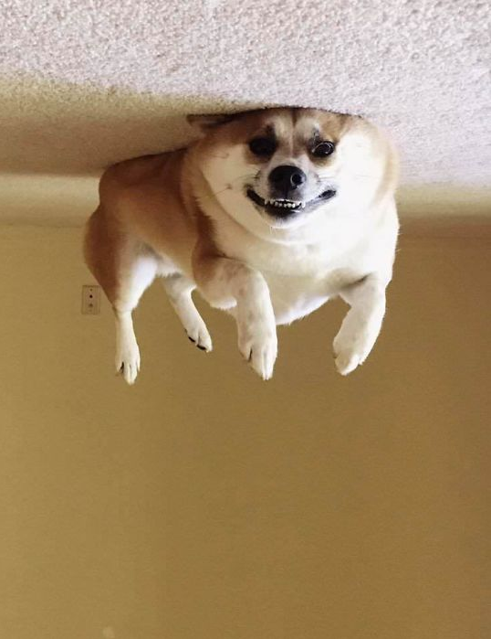

Dog stuck to ceiling after inhaling helium
Bernard, a one-year-old Corgi, inhaled the gas from balloons at a child's birthday party. He has now been pressed against the ceiling of his owner's house on the outskirts of Edinburgh for 12 hours.
Local vet Levi Tate told the BBC that this is more common than people think. "In 1954 ChiChi, a Chihuahua from Mexico City, floated away from his back garden. He landed safe and well three days later in a park in Phoenix, Arizona."
